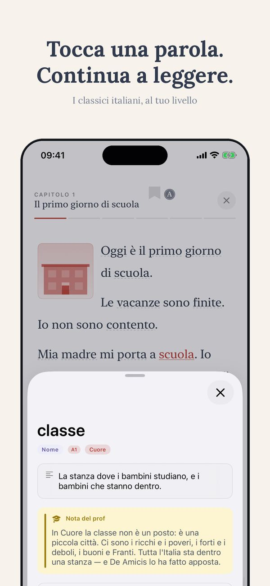
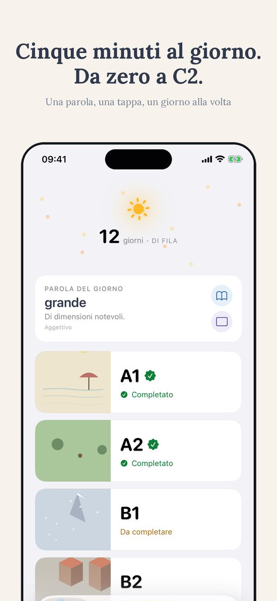

L'Italiano con Noi
L'Italiano con Noi è una scuola di italiano per stranieri a Verona, in Veneto: corsi intensivi di circa 20 ore a settimana e formule più leggere, con inizio in genere ogni lunedì. La scuola aiuta anche a trovare l'alloggio. Qui sotto trovi i dati essenziali del corso, una mini-guida di Verona per organizzare il soggiorno e un modulo per scrivere direttamente alla scuola.
Il corso
Quello che conviene sapere prima di prenotare
Sono le stesse domande per tutte le scuole, e nessun sito le spiega mai per intero. Qui trovi le risposte una volta sola, così quando scrivi alla scuola chiedi solo quello che manca davvero.
Alla tariffa settimanale quasi sempre si aggiunge una tassa d'iscrizione una tantum, che in Italia si aggira sui 50–90 euro. Poi possono essere separati: libri e materiali, l'alloggio, il servizio di ricerca alloggio, le attività culturali e la tassa d'esame. Chiedi sempre il totale, non il prezzo a settimana.
Quasi tutte le scuole contano in «ore di lezione» da 45 o 50 minuti, non da 60. Un corso da 20 ore settimanali con lezioni da 45 minuti sono 15 ore reali; con lezioni da 50 minuti sono 16 ore e 40. In questa pagina, sotto «Il corso», trovi la durata effettiva della lezione: usala per confrontare due scuole a parità di prezzo.
Il riferimento più usato è di circa 200 ore di lezione guidata per passare da un livello del Quadro europeo al successivo. Con un intensivo da 20 ore a settimana significa più o meno dieci settimane per livello, meno se studi anche fuori dall'aula. Una o due settimane non fanno cambiare livello: servono a sbloccare la lingua parlata, ed è già molto.
Le quattro riconosciute dallo Stato italiano sono CILS (Università per Stranieri di Siena), CELI (Università per Stranieri di Perugia), PLIDA (Società Dante Alighieri) e CERT.IT (Università Roma Tre). Valgono le stesse cose: cambiano il formato delle prove e le sessioni. Per la cittadinanza italiana serve il livello B1; per iscriversi a un'università italiana di solito il B2. AIL è una certificazione privata, diffusa ma non nell'elenco statale.
Se hai un passaporto dell'Unione Europea non serve niente: basta la carta d'identità. Se vieni da fuori UE, molte nazionalità possono stare fino a 90 giorni ogni 180 nell'area Schengen senza visto; oltre i 90 giorni serve il visto per studio, e per ottenerlo la scuola deve mandarti una lettera di iscrizione con il corso già pagato. Entro otto giorni dall'arrivo si chiede il permesso di soggiorno. Muoviti con almeno due mesi di anticipo.
Famiglia ospitante: la più utile per la lingua, spesso con colazione o mezza pensione, e ti obbliga a parlare italiano ogni sera. Appartamento condiviso con altri studenti: più libertà, meno pratica linguistica se i coinquilini parlano inglese. Studio o residence: comodo e più caro. Chiedi sempre distanza dalla scuola, cosa è incluso, se c'è cauzione e da che giorno a che giorno decorre la settimana.
Quante persone ci sono davvero in classe in alta stagione, non il massimo dichiarato. Quanto dura la lezione in minuti. Qual è il totale comprensivo di iscrizione, materiali e alloggio. Cosa succede se il tuo livello ha pochi iscritti: la classe si accorpa, diventa individuale ridotta o salta. Quali sono le condizioni di disdetta e se l'acconto è rimborsabile.
Giorni festivi 2026
| 1 gennaio | Capodanno |
| 6 gennaio | Epifania |
| 5–6 aprile | Pasqua e Pasquetta |
| 25 aprile | Liberazione |
| 1 maggio | Festa del Lavoro |
| 2 giugno | Festa della Repubblica |
| 15 agosto | Ferragosto |
| 1 novembre | Ognissanti |
| 8 dicembre | Immacolata |
| 25–26 dicembre | Natale e Santo Stefano |
Cosa non perdere a Verona
- Arena di VeronaL'anfiteatro romano che d'estate diventa teatro d'opera.
- Casa di Giulietta e piazza delle ErbeIl mito shakespeariano nel foro romano.
- CastelvecchioIl museo allestito da Carlo Scarpa.
Corso di italiano a Verona: come organizzarsi. Si vola su Verona (VRN), si prenota il corso con 2–3 settimane di anticipo (in alta stagione, giugno–settembre, le classi si riempiono prima) e, potendo, si fa coincidere la settimana di studio con uno degli eventi qui sopra: usare l'italiano a una festa cittadina vale quanto una settimana di lezioni.
Il meteo adesso
Le sigle
| ASILS | Associazione delle Scuole di Italiano come Lingua Seconda: qualità didattica verificata da un ente certificatore terzo. |
| EDUITALIA | Associazione di scuole e università accreditate che promuovono lo studio in Italia. |
| AIL | Accademia Italiana di Lingua: rete di scuole con esami di italiano propri («Firenze»). |
| IALC | Network internazionale di scuole di lingua indipendenti, selezionate e ispezionate. |
| Bildungsurlaub | Riconoscimento tedesco: il corso dà diritto al congedo formativo retribuito. |
| CILS | Certificazione ufficiale dell'Università per Stranieri di Siena. |
| CELI | Certificazione ufficiale dell'Università per Stranieri di Perugia. |
| PLIDA | Certificazione ufficiale della Società Dante Alighieri. |
| CSN | Ente svedese per il finanziamento allo studio: il corso è riconosciuto per i sussidi CSN. |
| LICET | Associazione di scuole d'italiano con standard di qualità condivisi e ispezioni reciproche. |
| DITALS | Sede autorizzata per l'esame DITALS (certificazione per insegnanti di italiano) dell'Università per Stranieri di Siena. |
Scrivi alla scuola
Eventi dell'anno
Le grandi feste, sagre e rassegne della città durante l'anno. Non sono solo spettacoli: sono la palestra migliore per l'italiano. A una festa cittadina ti trovi a ordinare, chiedere indicazioni, chiacchierare con la gente del posto — la lingua vera, quella che non c'è sui libri. Se puoi, fai coincidere una settimana di corso con uno di questi eventi.
| Stagione lirica areniana Da giugno a settembre l'Arena romana ospita opere liriche davanti a quindicimila spettatori, con il cuscino e la candela accesa. Esperienza unica: ottima per il lessico dell'opera. | giugno–settembre |
| Vinitaly Ad aprile la fiera del vino più importante d'Italia riempie Verona di produttori e buyer da tutto il mondo. Utile per il lessico del vino e per sentire l'italiano commerciale. | aprile |
| Verona in Love Attorno a San Valentino la città di Giulietta si riempie di installazioni, mercatini e concerti a tema. Occasione leggera: buona per il lessico dei sentimenti e per l'italiano di tutti i giorni. | febbraio |
| Tocatì, festival dei giochi di strada A settembre le piazze di Verona si riempiono di giochi tradizionali da tutta Europa, da provare gratis. Contesto ludico e informale: perfetto per imparare verbi d'azione e regole in italiano. | settembre |
Domande frequenti
Quando iniziano i corsi di italiano da L'Italiano con Noi?
Quante ore di lezione a settimana prevede il corso?
Quanto costa un corso di italiano a Verona?
La scuola aiuta a trovare l'alloggio?
Posso preparare o sostenere un esame ufficiale (CILS, CELI, PLIDA)?
Come arrivo a Verona?
Buono a sapersi prima di iscriversi
Non puoi ancora partire? Inizia da casa.
Con l'app ti impari l'italiano leggendo racconti graduati, con 14 lingue di supporto, esercizi e traduzioni. Il modo migliore per arrivare in Italia già pronto.
Inizia a studiare a casa ↗

